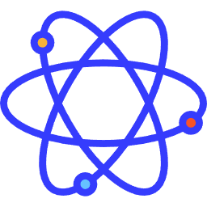

<div id="menu-div" style="display:block;">
    <div id="menu-overlay" style="position:fixed; left: 0; top: 0; height: 100vh; width: 100vw; background: rgba(0, 0, 0, 0.8);">
    </div>
    <div style="position:absolute; top:20px; left:50px; margin:0;">
        <div style="display:inline-block; padding:20px; background-color:white; border:1px solid black; text-align:center;">
            <div style="font-size: 32px;">
                
                QAMEL
            </div>

            A drag-and-drop quantum circuit simulator.

            <div style="margin:20px;">
                <div id="loading-div" style="color:#D90; font-size:40px; display:block; height:120px; width:410px;">
                    Loading...
                </div>
                <button tabindex="50" id="close-menu-button" style="width:410px; height:120px; font-size:20px; display:none;">Edit Circuit</button>
            </div>

            <div style="display:inline-block; text-align:center; border:1px solid black; padding:2px;">
                <a tabindex="51" href="https://github.com/Strilanc/Quirk/wiki/How-to-use-Quirk">
                    <div style="width:128px;">
                        <svg version="1.1" viewBox="0 0 20 25" width="48" height="48">
                          <text x="5" y="9" style="font-size: 8px;">???</text>
                          <path d="M0 0 h20 v25 h-20 v-25 M3 13 h14 M3 17 h14 M3 21 h14" stroke="black" fill="transparent"></path>
                        </svg>
                        <div>How to Use</div>
                    </div>
                </a>
            </div>

            <!-- <div style="display:inline-block; text-align:center; border:1px solid black; padding:2px;">
                <a tabindex="52" href="https://www.youtube.com/watch?v=aloFwlBUwsQ">
                    <div style="width:128px;">
                        
                        <div>Tutorial Video</div>
                    </div>
                </a>
            </div> -->

           
        </div>
        <div style="display:inline-block; vertical-align:top; line-height:1.8; padding:13px 15px 13px 5px; background-color:#DDD; border:1px solid gray; margin:0 0 0 -5px;">
            Example Circuits<br>
            <a id="example-anchor-grover">Grover Search</a><br>
            <a id="example-anchor-shor">Shor Period Finding</a><br>
            <a id="example-chsh-test">Bell Inequality Test (CHSH)</a><br>
            <a id="example-anchor-teleport">Quantum Teleportation</a><br>
            <a id="example-superdense-coding">Superdense Coding</a><br>
            <a id="example-anchor-delayed-eraser">Delayed Choice Eraser</a><br>
            <a id="example-symmetry-break">Symmetry Breaking</a><br>
            <a id="example-qft">Quantum Fourier Transform</a><br>
            <a id="example-addition">Reversible Addition</a><br>
            <a id="example-anchor-distill">Magic State Distillation</a><br>
        </div>
    </div>
</div>
